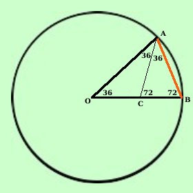

|
Mostriamo ora che il lato del decagono regolare e' la sezione aurea del raggio del cerchio circoscritto  Il lato del decagono regolare AB e' la corda dell'arco di fronte all'angolo di 36°. Considero il triangolo OAB. esso e' isoscele avendo per lati 2 raggi, quindi gli angoli uguali valgono 72°. Traccio la bisettrice AC dell'angolo OAB e considero il triangolo ABC, esso ha gli angoli: BAC = 36°^ perche' meta' di OBC ABO = 72°^ ACB = 72°^ perche' 180-72-36=72 Quindi anche il triangolo ABC e' isoscele Considero ora i triangoli OAB ed ABC essi, avendo gli angoli congruenti, sono simili e posso scrivere Te li ordino secondo gli angoli per scrivere meglio la proporzione
OA : AB = AB : BC ma so che AB = AC = OC ed anche OA = OB quindi OB : OC = OC : BC cioe' AB = OC e' la sezione aurea del raggio come volevamo Quindi il valore del lato AB del decagono regolare prendendo come unita' di misura il raggio r e'
E' possibile calcolare anche l'apotema del decagono regolare |
|||||||||||||||||||

|

|

|

|